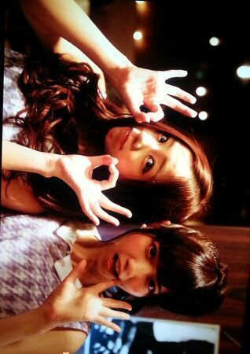
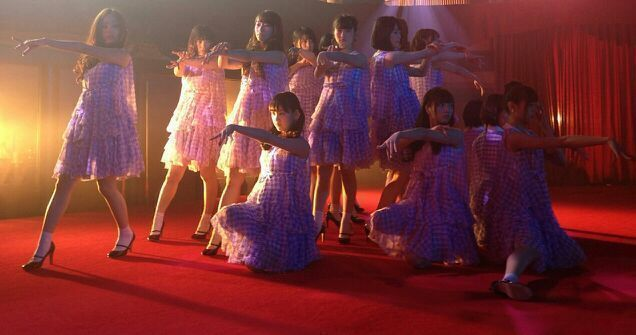

皆さん こんにちわ☆!!
ろってぃ−だよ〜..*
８枚目シングル『 気づいたら片想い 』のMVが公開致しました !!!
皆さん 見てくださいましたかー？？
撮影当日っ. ななせとぱしゃり.*

もう１枚.*
あっ、新曲衣装の写メ載せるのはろってぃ−初めてですね\*^^*/ ってほぼほぼ髪の毛で見えたないから全体写真...
じゃーん。

MV撮影風景... ろってぃ−一番手前で立ってる人.*
今回の８枚目シングルは 『泣かせる』をテーマに制作されました.
MVは ドラマ仕立てになっており
切ない悲しい,感動するストーリーになってます.
ジャケット写真撮影やMV撮影でも本当の涙をたくさん流しました.
お仕事で泣く演技をこんなに求められるのは初めてで不安もあったのですが、思ってた以上に気持ちが入ってしまい号泣してしまいました...
メイク直ししては 泣いて メイク直ししては 泣いて.笑
本当に いい経験になったと思います.
これから 『 気づいたら片想い 』を盛り上げていくために
私ろってぃ−も一生懸命頑張っていきたいと思います.
よろしくお願い致します !!
制作にたずさわってくださったスタッフの皆さん、本当にいい作品をつくってくださり、感謝しています。
ありがとうございました☆
のし.Rotty